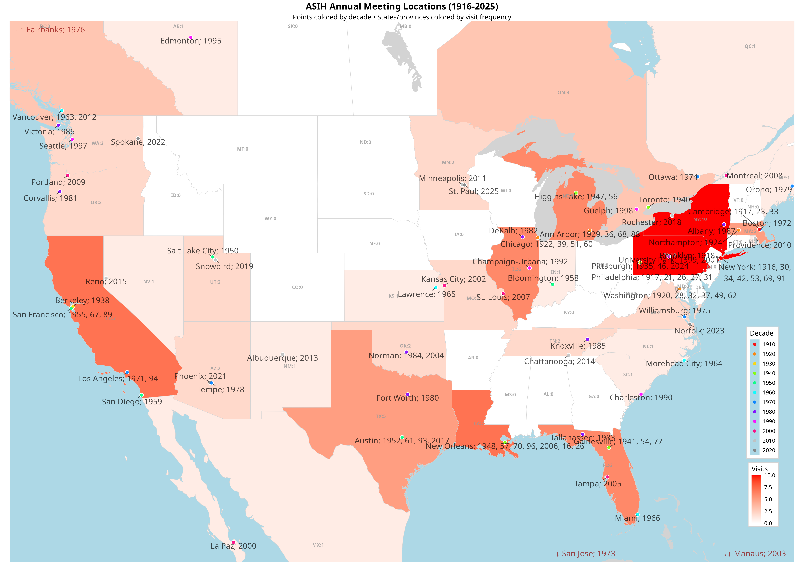

üìç Complete Timeline (1916-2026)

Complete visualization showing 106 ASIH meetings from 1916-2026 across 28 US states, 4 Canadian provinces, and 5 countries total
üåü Modern Era (2000-2026)
Modern era visualization showing 26 ASIH meetings from 2000-2026, highlighting recent geographic trends
üì± View on GitHub
üíæ Download ZIP
üìã Project Details
Data Source
Conference location data sourced from the ASIH Past Meetings page.
Technical Stack
- R - Data processing and statistical analysis
- ggplot2 - Static visualizations with clean boundary rendering
- sf - Spatial data handling for precise geographic boundaries
- rnaturalearth - High-quality subnational boundary data
- dplyr - Data manipulation and aggregation
- GitHub Pages - Static web hosting
Key Features
- Clean static visualization eliminating "shards of glass" boundary effects
- Decade-based discrete color coding (1910s-2020s)
- Individual US state and Canadian province boundaries with heatmap coloring
- All 106 meetings clearly labeled with city names
- International meetings (Canada, Costa Rica, Mexico, Brazil) properly positioned
- High-resolution output (20" × 14" at 300 DPI) suitable for presentations
üìû Contact & Contributing
This project was created for visualizing the geographic and temporal patterns of ASIH conference locations.
For questions, suggestions, or contributions, please visit the
GitHub repository.
Generated with ü§ñ Claude Code